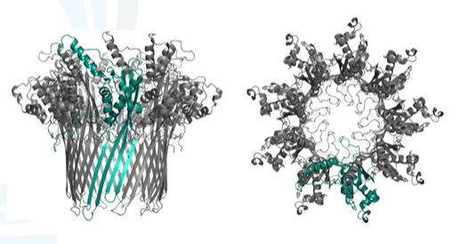
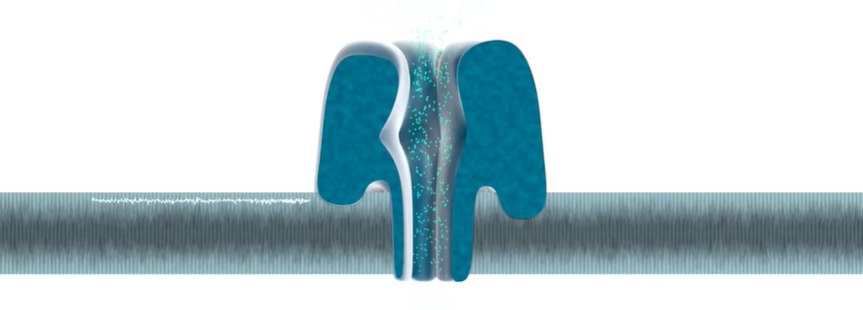
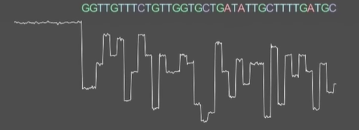
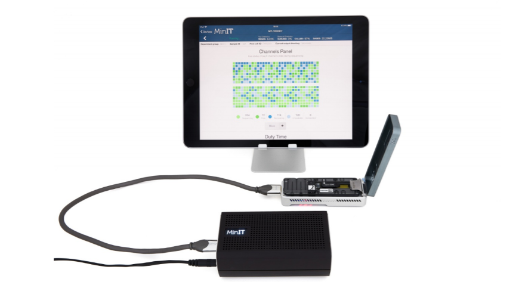
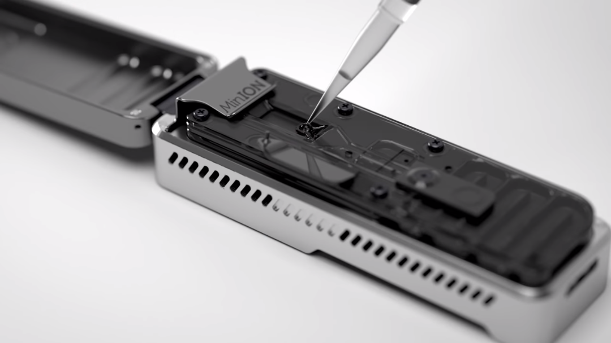
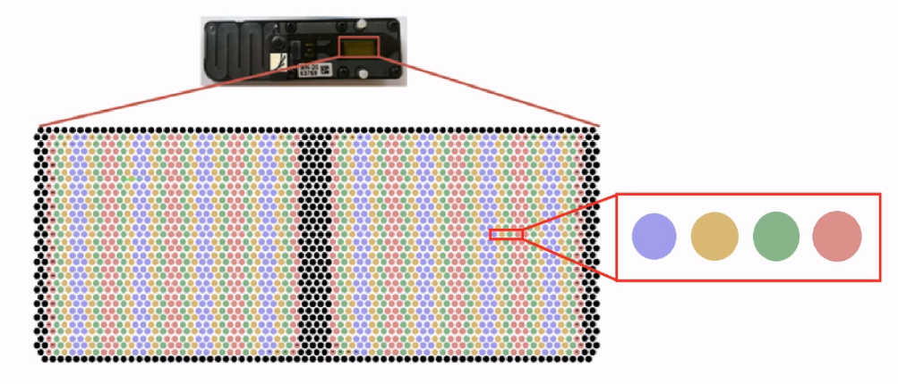
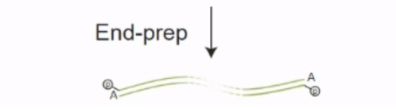
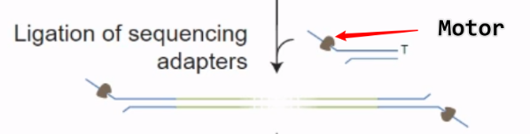
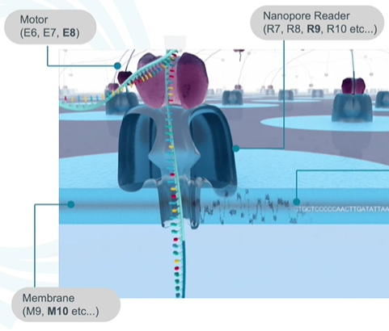

图解三代测序（Nanopore） (转载作为备份)

Contents
转载自 baimoc - 博客园
一、测序原理
先介绍 Nanopore 测序中的几位主角：
Reader ：在自然界中，有一种可以嵌入到细胞膜中作为离子或分子通道的跨膜蛋白，具有天然的蛋白纳米孔。经过人为基因工程修饰后，得到的就是 Nanopore 测序所需的 Reader 蛋白。
Membrane：Reader 蛋白会被嵌入到高电阻率的 Membrane （人工合成的多聚物膜），膜两侧是离子溶液，在两侧加不同的电位，离子就会在孔中流动，形成电流。
Motor：在 Nanopore 文库构建时，需要在接头上连接一种动力蛋白，用于将DNA或RNA分子推入纳米孔中。以DNA解螺旋酶作为 Motor（动力蛋白）为例，它可以除了可以解开双螺旋，使之变为单链，还可以提供推动力。

Tether：该蛋白用于锚定DNA或RNA链，防止在溶液中飘动，并使其进入纳米孔中。
这时，解开的其中一条链会穿过蛋白质孔，它在通过蛋白孔时，会对膜两边离子的稳定流动产生扰动。不同的碱基，对离子流的影响不同，也就会产生不同的电流大小，进而形成下面的电流信号图。 
利用这些电流信号，使用计算机软件识别后，推断出碱基类型，完成测序。
二、测序仪介绍
虽然 Nanopore 测序仪种类很多，但都是基于Nanopore芯片来搭建的平台，大到由多个芯片阵列组成的PromehION，GridION系列测序仪，小到可以连接手机的Type C，电脑USB的MnION系列便携式测序仪。

这里边，最著名的就是MnION系列，2016年8月，美国宇航员凯特·鲁宾斯在国际空间站完成微重力条件的DNA测序。
它在测序时，一般像下图这样连接就行，显而易见的便携性。比如，可以直接用它在深入疫区采集样本后进行实时分析，为防疫工作争取大量宝贵的时间和资源。 
测序时，将制备好的文库或样本溶液，滴在芯片小孔中，开始测序。 
一张芯片中有 2048 个 membrane wells，也就是芯片上的一个孔，每个孔包含一个nanopore Reader。

每四个 wells 共享一个 Amplifier（信号放大器），一张芯片中有 512 个信号放大器，也就是 512 组 wells。 
在启动测序仪后，机器自检，会将每组 wells 中依据效率高低排序。测序开始，仪器先用每组 wells 中效率最高的 wells，运行 8 小时后，更换效率第二的，以此类推。
但是，在实际使用过程中，只有 1200 个 wells可以正常工作。
造成 wells 失效的原因：
- wells 中没有 Reader 蛋白，或纳米孔不通，这时无电信号
- 膜破损，这时有强电信号，不能正常测序
- 在单个 well 中有两个及以上的 Reader 蛋白，电信号互相干扰
三、建库方法
1、1D 文库
1D文库是将DNA双链，解链为正义链与反义链，分别测序，大约有 85% 的碱基判读准确率。
目前1D文库有两种建库方案：
标准建库
-
将 DNA 打断

-
补齐DNA末端，末端加 A 碱基

-
连接 Adapter（ 接头序列），接头上连有 Motor 蛋白

-
接头中有一段序列可以与 Tether 蛋白结合，作用是为了将 DNA 链吸附在膜上，将 DNA 锚定，不易被溶液洗走

下图是 Tether 与接头序列识别及锚定过程


转座酶建库

{kind=link}
{kind=link}
{kind=link}
{kind=link}
{kind=link}
{kind=link}
{kind=link}
{kind=link}
{kind=link}
{kind=link}
2、$1D^2$ 文库
在 DNA 两侧接 $1D^2$ 接头，其他步骤和 1D 文库类似。
这种文库中的$1D^2$ 接头，可以让第二链紧跟第一链来一起测序。
由于可以测到两条链，可以相互矫正，进而提高判读准确率，能达到 90%以上的碱基判读准确率。

但是，由于文库质量，蛋白活性等因素，导致并不是所有的第一链后都会测到第二链。
四、碱基判读
在测序过程中，得到的信号并不是每次测得一个碱基信号。而是根据 Reader 蛋白孔的纵向长度，R9 大约为 5 个碱基长，也就是说，同时会测得 5 个碱基的电信号，这并不是一项简单的判断过程。
目前，Nanopore 公司采用一种机器学习方法，递归神经网络（RNN），对碱基进行判读。
该过程简单来说，是将已知碱基序列的电信号波形图做训练集和测试集，通过修正参数，拿到模型。最后，将新测到的未知序列的波形图与之比对，从而提高判读准确率。
但是，还是有误读情况：
- 由于空间结构相似性，嘌呤间误读，嘧啶间误读更容易发生。
- 碱基复杂度低的序列（如，polyA序列），更容易误读
五、测序影响因素
电压
以R9芯片为例，测序过程，先用 180 mV 电压，每 10 min，短时间翻转电压方向，作用是激活被堵住或卡住的 Reader 蛋白孔。但是，这个过程也会使正常测序的 DAN链倒吐回去。
随着电极使用时间的增加，电极的电压会发生漂移，因此每过两小时，要增加 5mV 电压抵消影响。
速度与产量
R9 芯片，测序速度是 250 碱基/s，一张芯片可以得到约 5 ~ 10 G的碱基序列。
六、芯片版本号
Nanopore 公司每一种新芯片就会有新 Reader蛋白，Motor，Membrane 版本号，一般命名规则如下：
-
Reader：R8，R9，R10，等
-
Motor：E6，E7，E8，等
-
Membrane：M9，M10，等
比如，R9 指的是大肠杆菌的 CsgG 蛋白质改造的 Reader 蛋白。 
{kind=link}
总结
- Nanopore 测序是基于电学的检测，区别与 Illumina 和 PacBio 的光学
- 测序仪器便携，可用于远离实验室的地区，如疫区，农场等
- 读长较长，大约 300,000 ~ 400,000 个碱基，可用于从头组装基因组，可变剪切等
- 可以对DNA ，RNA，甚至蛋白质序列进行测序
- 碱基判读准确率较高，R10纳米孔数据质量值超过Q40（错误率0.01%），一致性（Identity）质量值达Q50。
参考：
https://www.youtube.com/watch?v=RcP85JHLmnI
https://www.youtube.com/watch?v=E9-Rm5AoZGw&t=13s